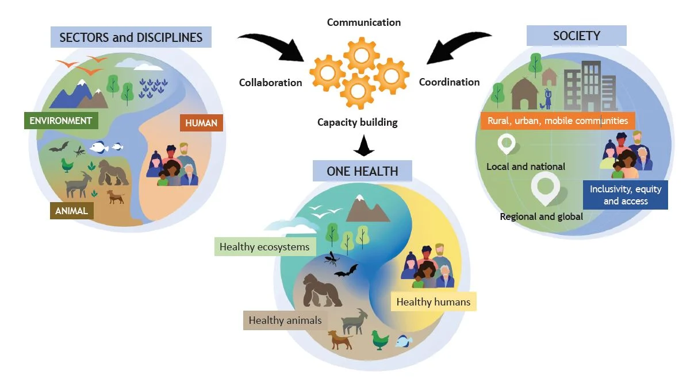
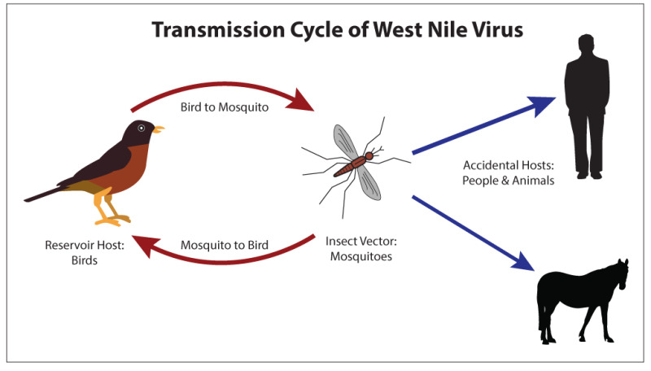
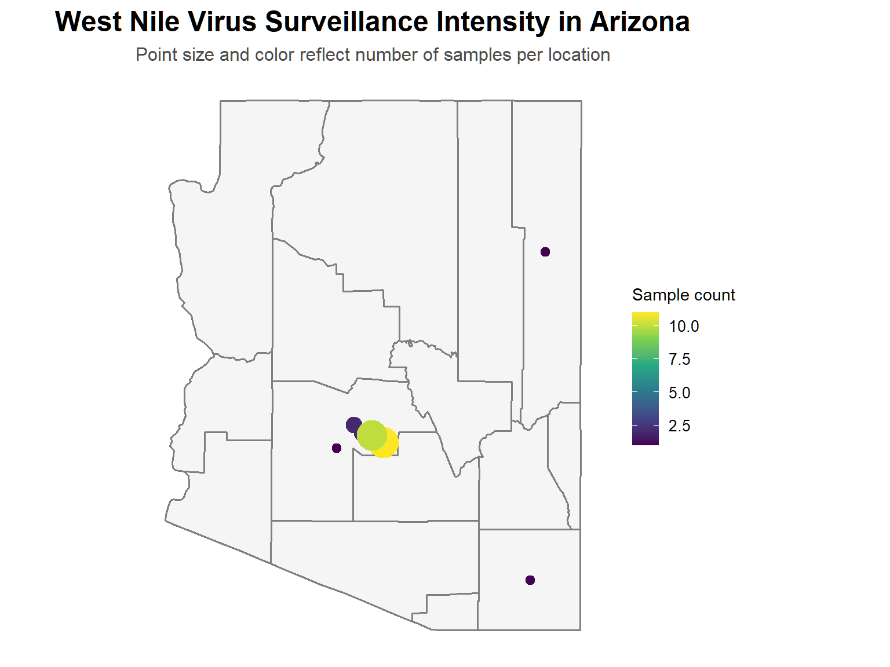
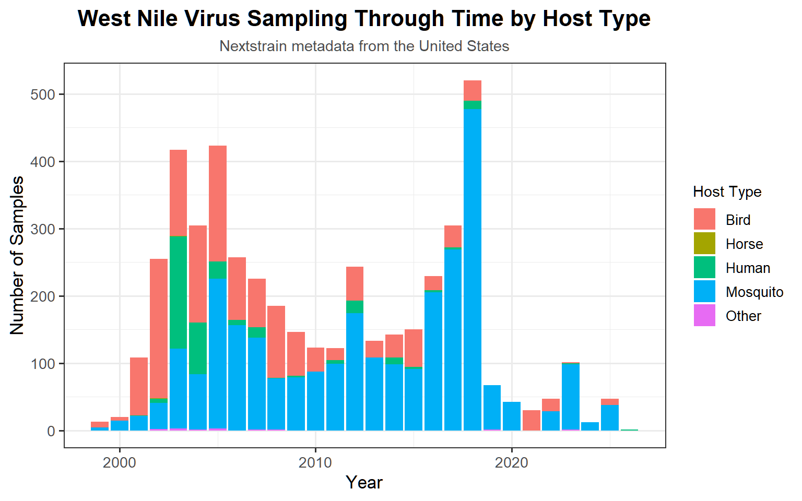
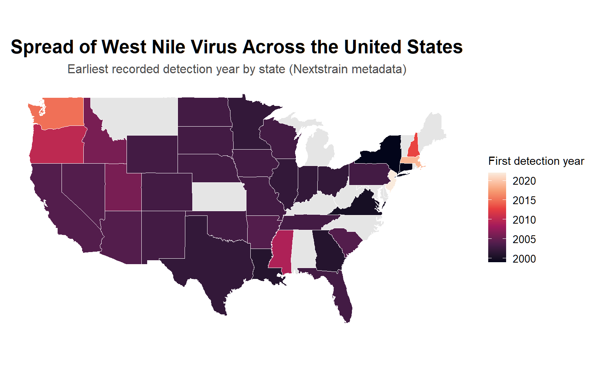

#######################################
# Install packages (only if needed)
#######################################
packages <- c(
"tidyverse", # data wrangling and visualization
"sf", # spatial data
"tigris", # US Census boundary data
"stringr", # text manipulation
"maps", # mapping
"zstd" # decompress Zstandard (.zst) files
)
# Identify packages that are not already installed
missing_packages <- packages[
!packages %in% rownames(installed.packages())
]
# Install only missing packages
if (length(missing_packages) > 0) {
install.packages(missing_packages)
}10 One Health, Pathogen Surveillance, and Nextstrain
A Case Study of West Nile Virus (WNV) in the Desert Southwest
Estimated Time: 2-3 Hours
10.0.1 Learning Objectives
By the end of this chapter, readers will be able to:
Define the One Health framework and explain its relevance to disease ecology
Describe how geospatial data support zoonotic disease surveillance and management
Explore an important research infrastructure for pathogen monitoring, Nextstrain
Visualize spatial patterns of West Nile Virus occurrence in Arizona using R and publicly available data
10.1 Introduction: What is One Health, and why is it important?
Infectious disease dynamics emerge from the complex interactions among host species, pathogens, and the environments they inhabit. Increasingly, ecologists and public health researchers recognize that these interactions cannot be understood by studying human, animal, or environmental health in isolation.
The One Health framework gained major momentum in 2004 when the Wildlife Conservation Society generated the “Manhattan Principles” to guide zoonotic infectious disease management (https://www.oneworldonehealth.org/sept2004/owoh_sept04.html). The principles hoped to address the complex interactions between hosts, pathogen, and their environments, while focusing on minimizing the threat to the health of life on Earth. This followed major international zoonotic outbreaks, including: West Nile Virus, Ebola, SARS, Monkeypox, Mad Cow Disease, and Avian Influenza. The principles emphasized the intricate dynamics influencing infectious disease transmission and behavior, and recognized that the health of humans, non-human animals, and ecosystems is fundamentally interconnected. At its core, One Health is both a conceptual framework and a collaborative and interdisciplinary approach that integrates experts from a diverse range of fields such as ecology, veterinary medicine, epidemiology, wildlife disease ecology, public health, and environmental science with the goal of working together to better understand and manage disease risk.

One Health has become especially important in an era of rapid environmental change. Climate warming, land-use change, biodiversity loss, urbanization, and global movement of people and goods can all alter opportunities for pathogen transmission and emergence. Many of these drivers influence the ecology of zoonotic diseases, i.e., infectious diseases that are transmitted among wildlife or domestic animals/livestock, and with the potential to spillover into human hosts.
A substantial proportion of emerging infectious diseases in humans originate from animal hosts (an organism or species that can harbor a pathogen and act as a long-term, natural source of infection), which highlights the importance of integrated approaches to surveillance and prevention. The COVID-19 pandemic further underscored the global consequences of emerging pathogens while revealing both the value and limitations of disease surveillance systems operating across political and ecological boundaries. The pandemic accelerated interest in One Health and the coordinated, data-driven approaches to disease surveillance and management, and helped bring renewed attention to One Health as both an important research paradigm and policy framework.
Global efforts from international organizations have increasingly emphasized One Health, for more information, see:
- Global One Health Community (GOHC) https://globalohc.org/
- World Health Organization (WHO) https://www.who.int/health-topics/one-health#tab=tab_1
- Center for Disease Control (CDC) https://www.cdc.gov/one-health/about/index.html
- One Health Initiative (OHI) https://onehealthinitiative.com/
In addition, One Health is increasingly referenced and cited in the scientific community, for more information, see: (Mackenzie and Jeggo 2019; (OHHLEP) et al. 2022; Zinsstag et al. 2011; Destoumieux-Garzón et al. 2018; Queenan et al. 2017), and the official One Health scientific journal, from the International Federation of Tropical Medicine https://www.sciencedirect.com/journal/one-health
For more information on One Health, the following video produced by the World Organisation for Animal Health gives a brief overview of the concept, and especially focuses on how changing environmental conditions can lead to altered zoonotic pathogen dynamics:
Another great resource for more information on One Health comes from a Ted Talk by Dr. Sharon Deem, a DVM and PhD with a unique perspective on the effects of environmental disruptions that could lead to spillover of zoonotic pathogens into humans. Notably, this talk was given in June 2018, just months before the start of the COVID-19 pandemic.
Although often discussed conceptually, One Health increasingly depends on data availability, and requires knowledge of tools in informatics and big-data management. Monitoring disease risks across host species, vector populations (i.e, intermediary hosts that can transmit pathogens, like mosquitoes or ticks), landscapes, ecosystems, and climates, requires integrating diverse information streams, often in near real time. This challenge makes One Health not only a biological framework, but also an informatics problem.
10.2 One Health as an Ecoinformatics Problem
Because disease systems operate across ecological, spatial, and temporal scales, studying them often requires integrating many types of data. This is where ecoinformatics plays an increasingly important role in One Health approaches.
Ecoinformatics applies computational, statistical, and data-science approaches to ecological questions, often leveraging large, heterogeneous, and spatially explicit datasets. For disease ecology and zoonotic management, these tools can help integrate information across multiple dimensions of a pathogen transmission system, including:
Host data, such as wildlife spatial distributions, abundance, movement dynamics, etc.
Vector surveillance data, including movement, fecundity or health of vector populations possible infection prevalence.
Environmental/Climate data, such as temperature, precipitation, vegetation, land-use, etc., and how these vary spatially and temporally (annual patterns and/or seasonal patterns)
Geospatial data products, leveraged data products that can be used to identify potential hotspots (where disease transmission is more/most likely), model risk to human hosts, and possibly forecast future outbreaks.
Viewed through this lens, many One Health questions become problems of data integration. For example; How do climatic anomalies or phenological patterns influence vector-borne disease outbreaks? How does landscape fragmentation alter opportunities for spillover into human hosts? Can environmental and surveillance data be combined to forecast and predict emerging disease risk, pinpointing potential areas with higher likelihood of disease outbreaks? Addressing these questions often requires combining ecological data collected at different spatial and temporal scales, a central challenge in many ecoinformatics research questions.
Geospatial analysis and results are particularly important because many disease processes are inherently spatial. Vector distributions shift across landscapes, reservoir hosts migrate, and environmental suitability for transmission can vary among regions or ecosystems, and can change over time. Mapping and modeling the dynamics of pathogen that cause disease in humans can reveal patterns difficult or impossible to detect through case counts and clinical data alone.
In this way, ecoinformatics and big-data research pipelines can provide much of the analytical foundation needed to practically apply One Health approaches. A major challenge is not only collecting these data streams, but making them interoperable and reproducible across disciplines. Rather than treating disease ecology as separate from environmental and earth data science, One Health can be viewed as an important tool toward pathogen surveillance and management, with informatics as the common thread connecting the diverse disciplines needed.
10.3 Case Study: West Nile Virus
10.3.0.1 Background Information for WNV
To illustrate these ideas, and analyze a specific example of One Health in practice, we focus this chapter on West Nile Virus (WNV), which is a vector-borne zoonotic pathogen that highlights many of the ecological and surveillance challenges that have motivated One Health approaches.
WNV is an important viral pathogen that can cause severe disease in humans and several other animal hosts. The pathogen was first introduced into the United States in the late 1990’s, and has since spread throughout North America. In humans, the individuals that become symptomatic (around 20% of those infected) develop flu-like symptoms, including fever, headache, body aches, fatigue, and sometimes a rash. In addition, a small proportion of cases (less than 1%) can cause extremely severe neuroinvasive disease that can cause stupor, disorientation, coma, tremors, convulsion, and even paralysis. (Petersen et al. 2013)
West Nile Virus is maintained through transmission cycles primarily involving different species of birds as the major reservoir host, and mosquitoes, particularly species in the Culex genus, as vectors. Humans and other mammals may become infected through mosquito bites but are generally considered incidental/accidental, or “dead-end” hosts, because they typically do not contribute to onward transmission.

This multihost transmission cycle makes WNV a classic One Health system: transmission dynamics emerge through interactions among wildlife hosts, vector ecology, environmental conditions, and human exposure. Importantly, WNV (and other vector-borne diseases) have become increasingly studied in the interface between climate change and zoonotic pathogen research due to changing global environmental conditions that can often favor mosquito habitat (Mordecai et al. 2019).
10.3.0.2 Why West Nile Virus in the Desert Southwest?
The desert Southwest, specifically the state of Arizona, provides a particularly relevant setting for exploring these dynamics.
Environmental conditions in arid and semi-arid systems can strongly shape mosquito abundance, host movement, and pathogen amplification. Temperature influences mosquito development rates, viral replication within vectors, and transmission potential, while precipitation and hydrological variability can affect fecundity and breeding habitat availability.
These links make WNV especially relevant in the context of climate variability and climate change. Warming temperatures, altered drought regimes, and changing precipitation patterns may influence both the timing and geography of disease risk.
Arizona also provides a useful regional case study because mosquito-borne disease dynamics occur in a range of diverse ecological contexts, from urban desert environments to the riparian corridors used by many host species. This ecological heterogeneity creates opportunities to explore how spatial variation can influence disease surveillance and management.
For more information on West Nile Virus in Arizona, see: (Landau and Leeuwen 2012; Jobe et al. 2024; Wilke et al. 2023; Coalson et al. 2023)
Because transmission dynamics are shaped by environmental conditions, host communities and populations, and vector ecology, West Nile Virus offers a powerful example of how One Health concepts can intersect with geospatial data and ecoinformatics tools, and provide critical insight to possibly predicting public health risks from disease.
10.4 Nextstrain: A Research Infrastructure for Pathogen Surveillance
Understanding and managing disease risk increasingly depends on open and interoperable research infrastructure. One important example is Nextstrain https://nextstrain.org/ (Hadfield et al. (2018)), which is an open-source platform for real-time tracking of pathogen evolution and spatial spread for numerous pathogens, including Avian Influenza, Rabies, SARS-CoV-2, and West Nile Virus.
Nextstrain combines pathogen genomic data with phylogenetic analysis, temporal information, and geographic metadata to visualize how pathogens move and diversify/mutate through populations over time. Originally developed for outbreak tracking and genomic epidemiology and phylogenetic inference, the platform has become an important example of modern pathogen surveillance infrastructure with publicly available open-source data.
Rather than treating pathogen genomes as isolated sequences, Nextstrain combines the available sequences and places them together in a spatial and evolutionary context, enabling researchers to ask questions such as:
How are pathogen lineages spreading geographically?
Are outbreaks linked through shared genetic ancestry?
How does pathogen genetic diversity change over time?
Can genomic surveillance complement traditional epidemiological monitoring?
These questions align closely with One Health objectives in integrating biological, environmental, and spatial information. During the COVID-19 pandemic, genomic surveillance platforms and pathogen research infrastructure played important roles in tracking viral evolution in near real time, by collecting and combining international sequence data. Throughout the course of the pandemic, different isolated genetic strains/variants of the SARS-CoV-2 virus spread rapidly (e.g., Omicron, Delta, Gamma, etc.), each with varying characteristics and behavior affecting pathogen transmission, disease severity, and vaccine evasion. Collaborative efforts were maximized by the use and application of open-source platforms like Nextstrain, allowing the sharing and reproducibility of a wide range of data. The same principles applied during the COVID-19 pandemic can and do extend beyond pandemic pathogens to the management and surveillance of zoonotic and vector-borne diseases, like West Nile Virus.
Importantly, genomic surveillance of zoonotic pathogens does not replace traditional environmental surveillance or earth sciences. Rather, it complements other research infrastructures, including:
Wildlife/insect surveillance networks (e.g., population surveys, insect prevalence, etc.)
Public health case reporting systems (e.g., CDC clinical case reports, county health data, etc.)
Environmental and climate monitoring products (e.g., NEON, USGS, etc.)
Geospatial mapping tools (e.g., NASA EOS, NEON AOP, etc.)
Together, these resources form part of a more broad One Health surveillance ecosystem. In this chapter, we use Nextstrain as an example of how open-source research infrastructure supports modern disease ecology and pathogen management efforts. Although genomic surveillance offers one lens on pathogen dynamics, many surveillance questions begin with simpler spatial data products and analysis. We next explore how geospatial mapping of case data can provide a complementary and fundamental One Health tool.
The coding exercise that follows focuses on a critical component of surveillance efforts, mapping the spatial distribution of a pathogen (here, West Nile Virus in Arizona) using publicly available data in R.
10.5 Coding Lab 1: Utilizing WNV Data from Nextstrain for Mapping Sampling Intensity in Arizona
10.5.1 Overview
In this exercise, we will use openly available pathogen surveillance data from Nextstrain to:
Access publically available data in Nextstrain through R
Import and inspect genomic surveillance metadata in R
Real world data-cleaning and management of messy data
Create a simple spatial visualization of West Nile Virus observations
Aggregate the observations into a county-level map in Arizona
This exercise introduces a simple but reproducible workflow for working with pathogen surveillance infrastructure in R to address a part of a One Health approach in the management of West Nile Virus.
10.5.2 Part 1: Install and Load Required Packages
Before beginning our analysis, we need to install and load the R packages required for this exercise. The following code checks whether each package is already installed and installs only those that are missing.
Load packages into our R session:
#######################################
# Load packages
#######################################
library(tidyverse)
library(sf)
library(tigris)
library(stringr)
library(maps)
library(zstd)10.5.3 Part 2: Access Nextstrain Data
10.5.3.1 About Nextstrain data access
Analysis and visualization of publicly available data on Nextstrain is possible on their website (<nextstrain.org>), but it is also possible to complete your own analyses or visualization with the help of their open-source software and robust documentation using R, Python, and other computational tools.
Here https://docs.nextstrain.org/en/latest/index.html is where you can find tutorials on installing tools, analyzing pathogen genomes, creating your own phylogenetic trees and workflows, or even how to upload your own pathogen genome sequences to be integrated to their website. The documentation includes instructions whether your system operator is macOS, Windows, or Linux.
Many Nextstrain datasets are distributed as machine-readable JSON files (similar to other research infrastructure datasets we have accessed through this course). For example, genomic sequence data are commonly provided in FASTA format (.fasta), while the associated metadata may be provided in tab-separated values (.tsv) or compressed formats such as Zstandard (.zst). See the Nextstrain documentation for additional examples, file formats and their applications, and more information.
To explore the available datasets, use this link: https://nextstrain.org/pathogens/files to search through all available pathogens and downloadable data files on Nextstrain.
For this exercise, we will work with metadata associated with West Nile virus (WNV). The metadata file contains information associated with the WNV sequences available through Nextstrain, including geographic information about the source of each sequence. We will download this file directly from Nextstrain’s public data endpoint and use it to explore the geographic distribution of available WNV sequence data.
10.5.3.2 Downloading and decompressing the metadata file
The WNV metadata file is distributed as a Zstandard-compressed file (.zst). Compression reduces file size, making datasets easier and faster to distribute. Before we can import the metadata into R, we first need to decompress the downloaded file.
We can accomplish both steps directly in R using the download.file() function and the zstd package. The following code downloads the compressed metadata file, decompresses it, and saves the resulting tab-separated values file (.tsv) to our working directory.
##################################################
# Download and decompress West Nile virus metadata
##################################################
# Define file names
metadata_url <- "https://data.nextstrain.org/files/workflows/WNV/metadata.tsv.zst"
compressed_file <- "wnv_metadata.tsv.zst"
metadata_file <- "wnv_metadata.tsv"
# Download the compressed metadata file
download.file(
url = metadata_url,
destfile = compressed_file,
mode = "wb"
)
# Check that the download succeeded
if (!file.exists(compressed_file) || file.size(compressed_file) == 0) {
stop("Metadata download failed. Please check your internet connection and try again.")
}
# Decompress the .zst file
zstd::zstd_decompress(
compressed_file,
metadata_file
)
# Check that decompression succeeded
if (!file.exists(metadata_file)) {
stop("Metadata decompression failed. Please check the downloaded file.")
}After running this code, we should have two files in our working directory: the original compressed file (wnv_metadata.tsv.zst) and the decompressed metadata file (wnv_metadata.tsv). The decompressed .tsv file is the version we will use for the remainder of this exercise.
10.5.3.3 Loading and exploring the metadata
Now that the metadata file has been downloaded and decompressed, we can import it into our R environment using read.delim(). Because the file is tab-separated, we specify “ as the delimiter.
###############################################
# Read West Nile virus metadata
###############################################
wnv_metadata <- read.delim(
metadata_file,
sep = "\t",
header = TRUE
)The metadata is now stored in our R environment as an object called wnv_metadata. We can begin by inspecting the first few rows using the head() function. This is a useful initial check to confirm that the data have been imported correctly.
######################################################
# Sanity check: Do the data look as expected?
######################################################
head(wnv_metadata) accession date region country division location state
1 KX646182 2014-XX-XX Asia India
2 KX646183 2014-XX-XX Asia India
3 KX646184 2014-XX-XX Asia India
4 KX646185 2015-XX-XX Asia India
5 KX646186 2015-XX-XX Asia India
6 KX869718 XXXX-XX-XX Asia India West Bengal
host host_genus host_type is_lab_host authors
1 Culex quinquefasciatus Culex Mosquito Khan et al.
2 Culex quinquefasciatus Culex Mosquito Khan et al.
3 Culex whitmorei Culex Mosquito Khan et al.
4 Culex vishnui Culex Mosquito Khan et al.
5 Culex vishnui Culex Mosquito Khan et al.
6 Khatun et al.
url length clade_membership lineage
1 https://www.ncbi.nlm.nih.gov/nuccore/KX646182 451 5
2 https://www.ncbi.nlm.nih.gov/nuccore/KX646183 451
3 https://www.ncbi.nlm.nih.gov/nuccore/KX646184 414
4 https://www.ncbi.nlm.nih.gov/nuccore/KX646185 420 5
5 https://www.ncbi.nlm.nih.gov/nuccore/KX646186 485 5
6 https://www.ncbi.nlm.nih.gov/nuccore/KX869718 284 5The output shows the first six observations in our dataset. We can also examine the dimensions of the dataset to determine how many observations and variables it contains:
###############################################
# Examine the dimensions of the dataset
###############################################
dim(wnv_metadata)[1] 25418 16In this case, the metadata contains 25,417 observations with 16 variables. Each observation represents a sequence record, while the variables contain additional information associated with that record.
To better understand what information is available, we can examine the variable names using the names() function:
###############################################
# What information does the metadata file have?
###############################################
names(wnv_metadata) [1] "accession" "date" "region" "country"
[5] "division" "location" "state" "host"
[9] "host_genus" "host_type" "is_lab_host" "authors"
[13] "url" "length" "clade_membership" "lineage" Here, we see a variety of information related to all observations in our dataset, including:
a unique identifier for each sample (“accession”)
date of collection(“date”)
several columns related to geographic data (“region”, “country”, “division”, “location”, “state”)
data related to the host species where the virus was detected (“host”, “host_genus”, “host_type”, “is_lab_host”)
sample source (i.e., who and where the data was published, “authors”, “url”)
phenotype information (“length”, “lineage”, “clade_membership”)
All of these data can be relevant for a variety of research questions, especially in the context of One Health related objectives.
10.5.4 Part 3: Filtering to Arizona Observations
Here, we want to focus on geographic information, starting with filtering to just Arizona data:
##################################################
# Filter our metadata to just Arizona observations
##################################################
az_wnv_data <- wnv_metadata %>%
filter(state == "AZ")
# Note: Inspecting the original metadata is crucial for making sure your
# naming definition is correct. Here, state-level labeling is also consistent
# with the division-level filtering, both resulting in the same output.Take a look at the data, unfortunately, only a subset of the Arizona data has more precise location data. Let’s filter out columns that do not have any location data.
##########################################
# Filter out blanks from 'location' column
##########################################
az_wnv_filtered <- az_wnv_data %>%
filter(location != "")Now that we have our data subset to include just Arizona data with reliable precise location data, let’s inspect the remaining location column to determine our next steps:
######################################################
# unique() shows all unique names in 'location' column
######################################################
unique(az_wnv_filtered$location)[1] "Gilbert" "Glendale" "Phoenix" "Cochise Co."
[5] "Maricopoa Co." "Apache Co." "Tempe Az" Perfect, this is messy (but fixable) real-world surveillance data. Our filtering process to precise locations for Arizona samples ends up with some data reported at the city level with different naming schemes, and some at the county level. Importantly, we also see that there is a typo in the data (“Maricopoa Co.” instead of “Maricopa Co.”). The next step is a crucial component to all ecoinformatics pipelines, data cleaning.
Let’s use dplyr and stringr to convert all location data to workable formats. NOTE: depending on your data, this process may change:
########################
#Clean text and fix typo
########################
az_wnv_filtered <- az_wnv_filtered %>%
mutate(
location_clean = str_trim(location),
location_clean = str_to_title(location_clean),
location_clean = str_replace(location_clean, " Co\\.", ""),
location_clean = str_replace_all(location_clean, "Maricopoa", "Maricopa")
)
########################
# Fix messy strings
########################
az_wnv_filtered <- az_wnv_filtered %>%
mutate(
location_clean = case_when(
location_clean == "Tempe Az" ~ "Tempe",
TRUE ~ location_clean
)
)
##############################
# Translate cities to counties
##############################
az_wnv_filtered <- az_wnv_filtered %>%
mutate(
county = case_when(
location_clean %in% c("Phoenix", "Glendale", "Gilbert", "Tempe") ~ "Maricopa",
location_clean == "Maricopa" ~ "Maricopa",
location_clean == "Cochise" ~ "Cochise",
location_clean == "Apache" ~ "Apache",
TRUE ~ location_clean
)
)
###########################
# Sanity check our workflow
###########################
table(az_wnv_filtered$location_clean)
Apache Cochise Gilbert Glendale Maricopa Phoenix Tempe
1 1 11 2 1 2 10 Now, we have 7 discrete and unique locations (some county-level, some city-level). Let’s formally aggregate the data and assign approximate coordinates to each point to continue with our analysis and generate a map:
##########################################################
# wnv_az_points to aggregate number of points per location
##########################################################
wnv_az_points <- az_wnv_filtered %>%
group_by(location_clean) %>%
summarise(
n = n(),
.groups = "drop"
)
#############################################
# Assign lat/long centroids per each location
#############################################
coords <- data.frame(
location_clean = c("Gilbert", "Glendale", "Phoenix", "Tempe", "Cochise", "Apache", "Maricopa"),
lat = c(33.3528, 33.5387, 33.4484, 33.4255, 31.8795, 35.3851, 33.2918),
lon = c(-111.7890, -112.1860, -112.0740, -111.9400, -109.7515, -109.5390, -112.4291)
)
###################################
# Join wnv_az_points to coordinates
###################################
wnv_az_geospatial <- left_join(wnv_az_points, coords, by = "location_clean")Now, we have a dataframe (wnv_az_geospatial) that includes the sample location (city or county), the number of samples collected at that location, and the approximate coordinates of where that observations was collected/reported. Because surveillance data are often unevenly samples across space, we aggregate sequence metadata into approximate geographic centroids to visualize sampling intensity across administrative regions (cities and/or counties).
Importantly, our results will reflect the sampling intensity rather than true disease prevalence. In other words, locations with more recorded samples may reflect differences in surveillance efforts, sequencing/sampling effort or capacity, or resources and reporting infrastructure rather than higher actual rates of West Nile Virus transmission. Epidemiologists and disease ecologists must grapple with and carefully account for how social, logistical, and institutional factors could influence and shape the structure of available data, extrapolating those results in meaningful ways, and interpret spatial patterns of disease. From a One Health perspective, this highlights how the interdisciplinary forces (biological, environmental, socio-institutional/cultural, etc.) jointly shape the data used to infer infectious disease dynamics, and why careful interpretation is necessary when translating surveillance data into conclusions about disease risk. Our work here is one piece of the broader framework used in pathogen surveillance and management.
10.5.5 Part 4: Visualization of our results
Let’s generate a map to visualize our work:
############################
# Use ggplot to create a map
############################
arizona_wnv_map <- ggplot(wnv_az_geospatial) +
# --- Base map: Arizona + counties ---
annotation_borders("state", regions = "arizona",
fill = "gray96", color = "gray60") +
annotation_borders("county", regions = "arizona",
color = "white", alpha = 0.5) +
# --- Data layer ---
geom_point(
aes(x = lon, y = lat, size = n, color = n),
shape = 19,
alpha = 1
) +
# --- Coordinate system ---
coord_fixed(1.3) +
# --- Size scaling ---
scale_size_continuous(range = c(2.5, 9)) +
# --- Viridis color scale ---
scale_color_viridis_c(
option = "viridis",
name = "Sample count"
) +
# --- Labels ---
labs(
title = "West Nile Virus Surveillance Intensity in Arizona",
subtitle = "Point size and color reflect number of samples per location",
size = "Sample count"
) +
# --- Theme ---
theme_minimal(base_size = 13) +
theme(
plot.title = element_text(
hjust = 0.5,
face = "bold",
size = 18
),
plot.subtitle = element_text(
hjust = 0.5,
size = 12,
color = "gray30"
),
panel.grid = element_blank(),
axis.title = element_blank(),
axis.text = element_blank(),
axis.ticks = element_blank(),
legend.position = "right",
legend.title = element_text(size = 11),
legend.text = element_text(size = 10)
) +
guides(size = "none")
arizona_wnv_map
10.6 Coding Lab 2: Temporal Application of the WNV Dataset in the United States
The coding lab above shows an important application of determining potential localized areas where further research is necessary (especially the conditions that influence high sampling intensity near Maricopa County). Another important epidemiological application for this dataset would be to investigate the temporal relationship of West Nile Virus spread throughout the country following the initial introduction to the western hemisphere. The first detection of WNV in the United States occurred in New York state in 1999, following its introduction from its endemic region in Africa and the Middle East, likely from an infected bird, human, or mosquito. (Petersen et al. (2013)). Here, in Coding Lab 2, we expand our spatial scale to examine the early spread of WNV across the United States.
Using the original complete Nextstrain metadata, we can estimate the earliest recorded detection year for each state to visualize the temporal progression and relationship of the outbreak, and map the spread of the pathogen over time following the initial introduction. This is an important analysis for many epidemiologists and One Health scientists. Rather than mapping all individual observations (which can be sparse and uneven through time), we estimate the earliest recorded detection year for each US state using the Nextstrain metadata.
10.6.1 Part 1: Filter our original metadata
First, we revert back to our originally downloaded metadata file, saved as wnv_metadata, and filter this dataset to only include observations from the United States
###############################################
# Filter metadata to United States observations
###############################################
us_wnv <- wnv_metadata %>%
filter(country == "USA")And now, we can extract the year from the collection data variable. Within the metadata file, there includes a full data field, typically in the YYYY-MM-DD format. To focus on the temporal spread, we extract just the year from each observation.
#######################################
# Extract the year from the data column
#######################################
us_wnv <- us_wnv %>%
mutate(
year = as.numeric(substr(date, 1, 4))
)We have now created a new dataset (us_wnv) that only includes US observations (reducing the total number from 25,202 in the original metadata file, down to 5,149 observations), with a newly created variable, ‘year’ that reports just the year from each observation.
10.6.2 Part 2: Exploring temporal patterns in the dataset
Before aggregating the data to first detection year by state, it is useful to explore how sampling effort varies through time. Understanding temporal patterns in the dataset helps contextualize the spatial results, and highlights an important challenge in disease ecology: distinguishing true ecological patterns from variation in sampling intensity.
In addition, the metadata include information on the host type (e.g., birds, mosquitoes), allowing us to examine how different components of the complex transmission cycle of WNV are represented in the dataset over time.
To visualize these patterns, we can create a simple plot that shows how the number of samples in the dataset changes through time, while also distinguishing among host types (host_type is a variable included in the metadata). This allows us to explore both temporal variation in sampling effort and how different components of the WNV transmission cycle are represented in the data.
######################################################
# Filter out missing samples for year and/or host type
######################################################
us_wnv_plot <- us_wnv %>%
filter(!is.na(year), !is.na(host_type), host_type != "")
#######################################################################
# Quick look at the host_type data to see if we need to do any cleaning
#######################################################################
unique(us_wnv_plot$host_type)[1] "Mosquito" "Bird" "Human" "Psorophora sp."
[5] "Other" "Nans" "Astur gentilis" "Horse" Looking at each of the unique values reported in the host_type column, we see several unique values, but also some data cleanup we need to do first. Importantly, “Psorophora sp.” represents a genus of Mosquitoes, and “Astur gentilis” represents the goshawk, a raptor/bird species. These should be combined. Also, “Nans” seems to be an reporting error consistent in a large set of data submitted to Nextstrain. A quick look through the metadata file, and following the publication url shows that all data with the “Nans” host type are also all collected from birds, and should also be combined.
########################################
# Clean and combine host_type categories
########################################
us_wnv_plot <- us_wnv_plot %>%
mutate(
host_type_clean = case_when(
# Birds
host_type %in% c("Bird", "Astur gentilis", "Nans") ~ "Bird",
# Mosquitoes
host_type %in% c("Mosquito", "Psorophora sp.") ~ "Mosquito",
# Humans
host_type == "Human" ~ "Human",
# Horse
host_type == "Horse" ~ "Horse",
# Everything else
TRUE ~ "Other"
)
) %>%
filter(!is.na(host_type_clean))Now, we can create a simple stacked bar plot, including number of sampled reported in the US each year, divided into the proportion of each year’s samples that represent the different host types recorded.
##################
# Stacked bar plot
##################
wnv_time_host_plot <- ggplot(us_wnv_plot,
aes(x = year, fill = host_type_clean)) +
geom_bar(position = "stack") +
labs(
title = "West Nile Virus Sampling Through Time by Host Type",
subtitle = "Nextstrain metadata from the United States",
x = "Year",
y = "Number of Samples",
fill = "Host Type"
) +
theme_bw(base_size = 13) +
theme(
plot.title = element_text(
hjust = 0.5,
face = "bold",
size = 16
),
plot.subtitle = element_text(
hjust = 0.5,
size = 11,
color = "gray30"
),
legend.position = "right",
legend.title = element_text(size = 11),
legend.text = element_text(size = 10)
)
wnv_time_host_plot
This figure highlights how sampling effort varies through time and across host types. In several years, the number of available samples increases substantially, reflecting changes in surveillance intensity, sequencing capacity, and research priorities rather than true changes in disease prevalence alone.
Additionally, the distribution of samples across host types illustrates the multi-host nature of West Nile Virus transmission. Observations include both avian reservoir hosts and mosquito vectors, reinforcing a key principle of One Health: understanding disease dynamics requires integrating information across multiple species and components of the transmission system.
Importantly, these temporal and host-related patterns influence how we interpret spatial analyses. Uneven sampling through time can affect estimates of when and where a pathogen is first detected, motivating the use of simplified epidemiological metrics such as what follows in the subsequent section.
10.6.3 Part 3: Determine first detection for each state
The next step is to determine which observation per each state was the first detection, so we can determine the first detection year for all states that have reported observations of WNV. This will reduce noise from uneven sampling (both temporally and spatially).
##################################################
# Calculate earliest detection year for each state
##################################################
first_detection <- us_wnv %>%
filter(!is.na(year)) %>%
group_by(state) %>%
summarise(
first_year = min(year),
.groups = "drop"
)Let’s look at our dataset, specifically, let’s look at what the “state” variable and the unique characters in our new dataset:
###################################################
# How many unique observations in 'state' variable?
###################################################
unique(first_detection$state) [1] "AR" "AZ" "CA" "CO" "CT" "FL" "GA" "IA" "ID" "IL" "IN" "LA" "MA" "MN" "MO"
[16] "MS" "ND" "NE" "NH" "NJ" "NM" "NV" "NY" "OH" "OK" "OR" "PA" "SC" "SD" "TN"
[31] "TX" "UT" "VA" "WA" "WI" "WY"10.6.4 Part 4: Preparing state data for our visualization
Above, we see that there are 36 unique states available for our dataset. Importantly, these data report the state with the unique two-letter abbreviations(e.g., Arizona is “AZ”). The map_data available through ggplot2 and the tidyverse uses full lowercase names (e.g., Arizona is “arizona”). We need to match the state abbreviations to full lowercase names:
###############################
# First, load US state map data
###############################
states_map <- map_data("state")
###########################
# Create state lookup table
###########################
state_lookup <- data.frame(
state = state.abb,
state_name = tolower(state.name)
)
#####################################
# Join lookup table to detection data
#####################################
first_detection <- first_detection %>%
left_join(state_lookup, by = "state")
###############################################
# Now, join detection data to map_data polygons
###############################################
map_data_joined <- states_map %>%
left_join(first_detection, by = c("region" = "state_name"))10.6.5 Part 5: Visualize the temporal progression of WNV across the United States
Now, we’re ready to plot our results in a national US map for all available states with data:
########################################
# Plot first detection year by state
########################################
us_wnv_map <- ggplot(map_data_joined,
aes(x = long, y = lat, group = group, fill = first_year)) +
geom_polygon(color = "white", linewidth = 0.2) +
coord_fixed(1.3) +
scale_fill_viridis_c(
option = "rocket",
na.value = "gray90",
name = "First detection year"
) +
labs(
title = "Spread of West Nile Virus Across the United States",
subtitle = "Earliest recorded detection year by state (Nextstrain metadata)"
) +
theme_minimal(base_size = 13) +
theme(
plot.title = element_text(hjust = 0.5, face = "bold", size = 18),
plot.subtitle = element_text(hjust = 0.5, size = 12, color = "gray30"),
axis.title = element_blank(),
axis.text = element_blank(),
axis.ticks = element_blank(),
panel.grid = element_blank(),
legend.position = "right",
legend.title = element_text(size = 11),
legend.text = element_text(size = 10)
)
us_wnv_map
The map illustrates the temporal spread of West Nile Virus across the United States, beginning with its introduction in 1999 and expanding across states in subsequent years. Taken as a whole, it seems that the earliest detection years were in the east coast, and spreading west over time. Washington state in the upper pacific northwest region has the latest detection year in the Nextstrain dataset. States filled in gray have no available data reported or published.
However, as with the Arizona case study from Coding Lab 1, it is important to interpret these patterns carefully:
The “first detection year” reflects the recorded observations, but that doesn’t necessarily reflect the true first arrival of the pathogen
Again, as with the Arizona case study, differences among states may reflect sampling effort, availability of surveillance infrastructure, or sequencing capacity, rather than biological spread alone. As such, some states may appear to have later detection simply due to delayed reporting or limited data availability.
Connection back to One Health, this national-scale perspective complements our earlier regional analysis by showing how:
Pathogen spread occurs across large spatial scales
Surveillance data are shaped by human systems and infrastructure
Integrating spatial and temporal data is essential for understanding zoonotic disease dynamics
Together, these case studies can highlight an important and central challenge in One Health initiatives; distinguishing true ecological patterns from the structure and limitations of the data used to observe/report them.
10.7 One Health/Nextstrain Written Questions:
1. Sampling intensity vs. ecological signal (Arizona focus): The Arizona map shows a strong clustering of samples in Maricopa County. What mechanisms could produce this pattern? How might you distinguish between true ecological drivers (e.g., mosquito abundance, host density, climate/habitat suitability) and sampling biases (e.g., urban surveillance infrastructure, reporting effort, interest)?
2. Human systems as part of disease ecology (One Health lens): How do human factors, such as population density, public health funding, and access to sequencing technologies, shape the spatial and temporal patterns observed in pathogen datasets like this one? In what ways are these human systems an integral part of disease ecology itself?
3. Temporal sampling patterns and external events: The stacked bar plot shows variation in sampling through time, including a noticeable drop in recent years (2019 - now). What are some possible explanations for this pattern (e.g., changes in funding, shifting public health priorities during the COVID-19 pandemic, or true changes in WNV prevalence)? How would you test these competing hypotheses?
4. Host representation and transmission dynamics: The dataset includes samples from multiple host types (e.g., birds, mosquitoes, humans). How does the relative representation of these host types influence our understanding of the WNV transmission cycle? What biases might arise if one host group is oversampled relative to others?
5. Interpreting spread using first detection maps: The US map visualizes the first recorded detection year of WNV by state. What are the strengths and limitations of using first detection as a metric for pathogen spread? How might uneven surveillance effort across states influence the general east-to-west progression?
6. Designing a better One Health surveillance system: Based on all analyses in this chapter, what additional data streams or research infrastructures would improve our ability to interpret WNV dynamics? Consider environmental data (e.g., temperature, precipitation), vector surveillance, wildlife host movement, and human case data. How would integrating these datasets change the conclusions you could draw about WNV dynamics?
10.8 Nextstrain/One Health Culmination Writeup
Write up a 1-page derived data product or research pipeline proposal summary of a project that you might want to explore using Nextstrain data. Include the types of Nextstrain data (and other data) that you would need to implement this project. Save this summary as you will be refining and adding to your ideas over the course of the semester.
Suggestions:
Tables or bullet lists of specific data products.
An overarching high-quality figure to show how these data align.
One paragraph summarizing how this data or analysis is useful to you and/or the infrastructure.
10.9 References
Coalson, J. E, D. M. Richard, M. Hayden, et al. 2023. “Aedes Aegypti Abundance in Urban Neighborhoods of Maricopa County, Arizona, Is Linked to Increasing Socioeconomic Status and Tree Cover.” Parasites & Vectors 16 (1): 357. https://doi.org/10.1186/s13071-023-05966-z.
Destoumieux-Garzón, Delphine, Patrick Mavingui, Gilles Boetsch, et al. 2018. “The One Health Concept: 10 Years Old and a Long Road Ahead.” Frontiers in Veterinary Science Volume 5 - 2018. https://doi.org/10.3389/fvets.2018.00014.
Hadfield, James, Colin Megill, Sidney M Bell, et al. 2018. “Nextstrain: Real-Time Tracking of Pathogen Evolution.” Bioinformatics 34 (23): 4121–23. https://doi.org/10.1093/bioinformatics/bty407.
Jobe, Ndey Bassin, Nico M. Franz, Murray A. Johnston, et al. 2024. “The Mosquito Fauna of Arizona: Species Composition and Public Health Implications.” Insects 15 (6). https://doi.org/10.3390/insects15060432.
Landau, K., and W. J. D. van Leeuwen. 2012. “Fine Scale Spatial Urban Land Cover Factors Associated with Adult Mosquito Abundance and Risk in Tucson, Arizona.” Journal of Vector Ecology 37 (2): 407–18. https://doi.org/10.1111/j.1948-7134.2012.00249.x.
Mackenzie, John S, and Martyn Jeggo. 2019. “The One Health Approach—Why Is It so Important?” Tropical Medicine and Infectious Disease 4 (2). https://doi.org/10.3390/tropicalmed4020088.
Mordecai, Erin A., Jamie M. Caldwell, Marissa K. Grossman, et al. 2019. “Thermal Biology of Mosquito‐borne Disease.” Ecology Letters 22 (10): 1690–708. https://doi.org/10.1111/ele.13335.
(OHHLEP), One Health High-Level Expert Panel, Wiku B. Adisasmito, Salama Almuhairi, et al. 2022. “One Health: A New Definition for a Sustainable and Healthy Future.” PLOS Pathogens 18 (6): e1010537. https://doi.org/10.1371/journal.ppat.1010537.
Petersen, L. R., P. J. Carson, B. J. Biggerstaff, B. Custer, S. M. Borchardt, and M. P. Busch. 2013. “Estimated Cumulative Incidence of West Nile Virus Infection in US Adults, 1999–2010.” Epidemiology and Infection 141 (3): 591–95. https://doi.org/10.1017/s0950268812001070.
Queenan, Kevin, Julie Garnier, Liza Rosenbaum Nielsen, et al. 2017. “Roadmap to a One Health Agenda 2030.” CAB Reviews 12 (14): 1–17. https://doi.org/10.1079/PAVSNNR201712014.
Wilke, André B B, Dan Damian, Maria Litvinova, et al. 2023. “Spatiotemporal Distribution of Vector Mosquito Species and Areas at Risk for Arbovirus Transmission in Maricopa County, Arizona.” Acta Tropica 240. https://doi.org/10.1016/j.actatropica.2023.106833.
Zinsstag, J., E. Schelling, D. Waltner-Toews, and M. Tanner. 2011. “From ‘One Medicine’ to ‘One Health’ and Systemic Approaches to Health and Well-Being.” Preventive Veterinary Medicine 101 (3): 148–56. https://doi.org/https://doi.org/10.1016/j.prevetmed.2010.07.003.